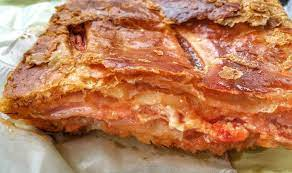

Parigina recipe:
Ingredients:
- 1 pound ground beef
- 1/2 pound ground pork
- 4 large potatoes, boiled and mashed
- 1 cup breadcrumbs
- 1/2 cup grated Parmesan cheese
- 2 eggs, beaten
- 1/4 cup chopped fresh parsley
- 1/4 cup chopped fresh basil
- 1/4 cup chopped fresh oregano
- Salt and pepper to taste
- 1/4 cup olive oil
Instructions:
- Preheat the oven to 375°F (190°C).
- In a large bowl, combine the ground beef, ground pork, mashed potatoes, breadcrumbs, Parmesan cheese, eggs, parsley, basil, oregano, salt, and pepper.
- Form the mixture into small meatballs (about the size of a golf ball).
- Heat the olive oil in a large skillet over medium heat. Add the meatballs and cook until browned on all sides, about 8-10 minutes total.
- Transfer the meatballs to a baking dish and bake in the preheated oven for 15-20 minutes, until cooked through.
- Serve hot and enjoy your delicious Italian Parigina!